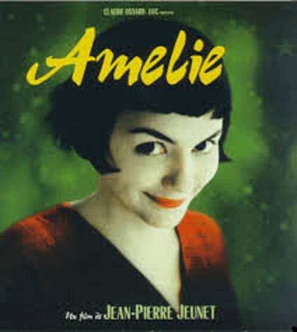

Amélie
Cuando Jean-Pierre Jeunet estrenó, hace una 15 años, su cuarta película como director (segunda en solitario, ya había hecho Alien Resurrección) tras codirigir con Marc Caro Delicatessen y La ciudad de los niños perdidos, nunca imaginó que su destino, como el de su protagonista, también sería fabuloso. Y es que el éxito de Amélie (Le fabuleux destin d’Amélie Poulain en el original) ha traspasado lo puramente cinematográfico.